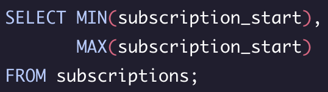
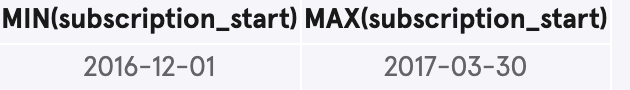
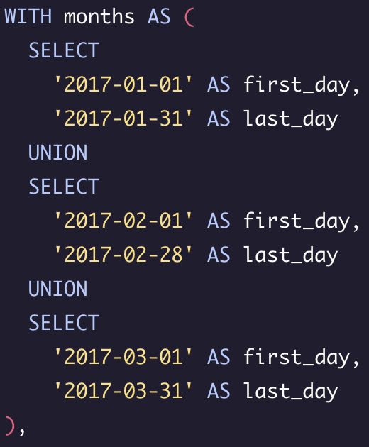
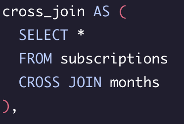
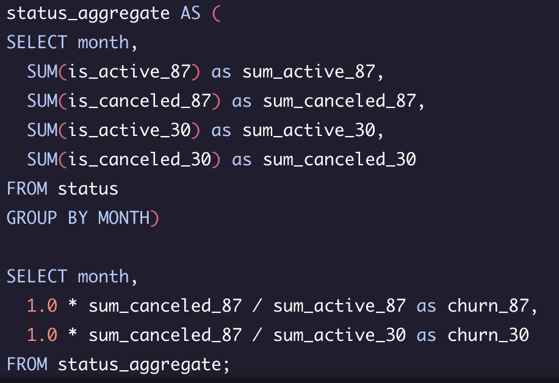
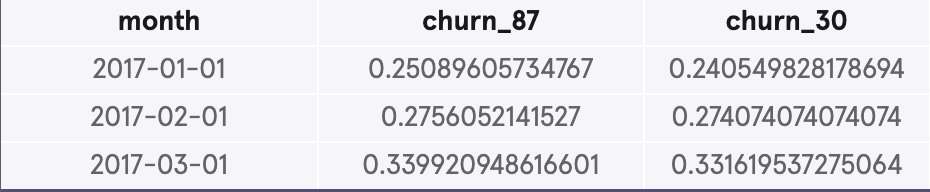

First things first, I'll take a quick look at the data. After running a select distinct on segment, I was able to establish there are two segments 30 and 87.
Next, I'd like to get a sense of data. I want to see the min and max for subscription start:
Query Results
In my analysis, I want to establish the churn rate. In order to do this I must first establish the first and last day of each month. I'm going to use a with (CTE) statement so I can use this table later in my query
With the first and last day established, I'm now going to cross join with table subscriptions.
Next, I'll use a CASE statement to simplify the data. I'll create a few buckets.
is_active_87 and is_canceled_87
is_active_30 and is_active_30
With all this out of the way I can finally start making useful of the data.
Query Results / Analysis
There is not much difference in churn amongst the two groups but we can see there is a significatly higher churn rate in march.